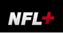

Case studies 09
NFL Fantasy App & NFL+
Pricing & Packaging: D2C Subscription for NFL+
Features alone didn’t explain what fans would pay for—motivation to consume content explained why segments chose differently.
1.1M
Sign-ups at Launch
2.7M
Subscribers by 2024
Situation
- The NFL was preparing NFL+—its first D2C mobile subscription—against Club+, League Pass, Club Pass, and Mobile RedZone.
- Product and media strategy needed empirical packaging and pricing guidance before launch.
Task
- Evaluate five alternate NFL+ packaging configurations.
- Explain preference differences across fan segments with a motivation-to-consume measure.
Action
- Ran Design Studios (24 fans) with MoSCoW sorting and package ranking before/after price reveal.
- Fielded a 2,208-fan national survey on features and competitor usage.
- Analyzed reach/preference (TURF-style) and MaxDiff motivation dimensions in SPSS.
Result
- Recommendations supported the first NFL+ mobile subscription offering.
- ~1.1M sign-ups after the 2022 launch; later footprint ~2.7M heading into 2024.
- Partnered with NFL Media and Product Strategy on the packaging blueprint.

Direct-to-Consumer Subscription
1.1M
NFL+ sign-ups after the 2022 launch
~2.7M
NFL+ subscribers heading into the 2024 season